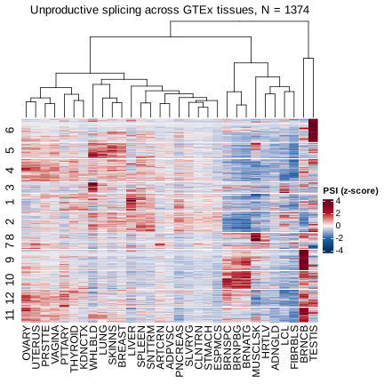

[1] "No enrichment found in any groups using ~1000 heatmap genes as background."Figure 2 - Heatmap of unprodoctive splicing by tissues
figures
manuscript
Heatmap of PSI of unproductive splicing for introns that are commonly differentially spliced across tissues.
Notes
- Use GTEx dataset
Heatmap

GO enrichment
GO enrichment on the 12 clusters shown in the heatmap above. The 12 clusters of intron-clusters represent 1197 genes. I used gprofiler2 to run GO enrichment on each of these 12 sets of genes against GO terms in GO:BP, GO:MF, and GO:CC.
Using the 1197 genes as background didn’t yield any significant enrichment. But there is enrichment when using all human genes as background. as. shown in Table 2 . P-values are multiple testing corrected using gprofiler2’s internal method.
# A tibble: 12 × 2
group N_genes
<chr> <int>
1 6 158
2 5 106
3 4 151
4 3 74
5 1 117
6 2 137
7 8 59
8 7 50
9 9 135
10 10 124
11 12 115
12 11 100Enrichment test using heatmap genes as background
Enrichment test using whole genome as background
[1] "These clusters have enrichment in GO terms" [1] "6" "5" "4" "3" "1" "2" "9" "10" "12" "11"